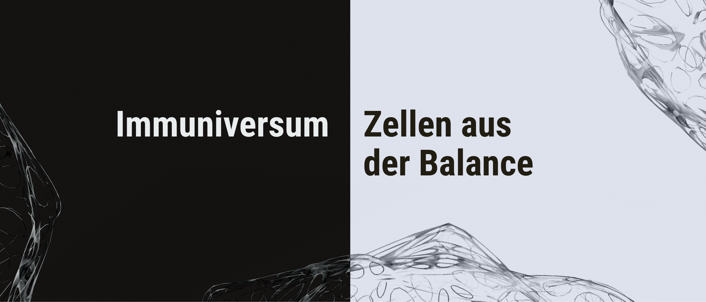
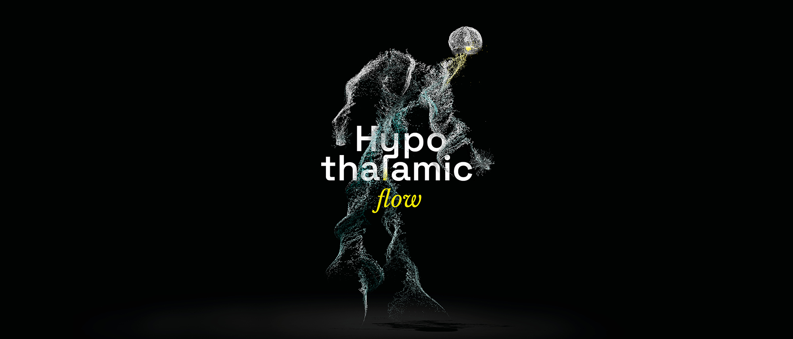
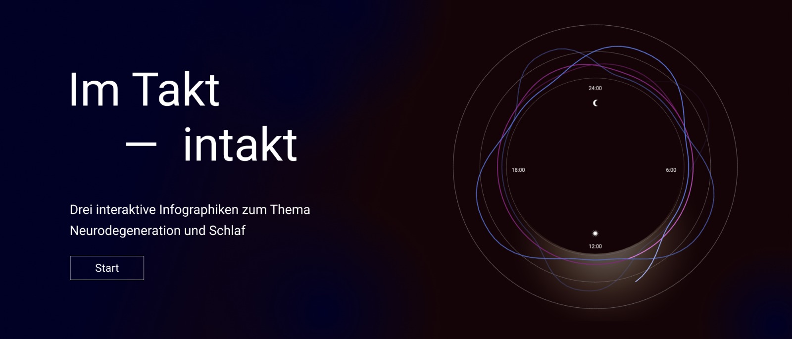

Partizipative Wissenschaftskommunikation
In Kooperation mit dem Wissenschaftsmagazin Spektrum der Wissenschaft und dem KielSCN entstanden interaktive Infografiken und Visualisierungen zum Thema Gesundheit.
Ziel des experimentellen Gemeinschaftsprojektes war es, in einem frühen Stadium des Gestaltungsprozesses Publikums-Meinungen einzuholen. Durch das Leser*innen-Feedback sollten Visualisierungen entstehen, die komplexe Inhalte für ein breites Publikum mit unterschiedlichem Hintergrund zugänglich machen.
Betreut von Carolin Wagener und Prof. Tom Duscher.
Betreut von Carolin Wagener und Prof. Tom Duscher.

Immuniversum – Immunsystem aus der Balance
arrow_outward
Das Immuniversum ist eine Anwendung, die dazu beiträgt, durch freie interaktive Exploration des Immunsystems im gesunden und kranken Zustand die Krankheit Multiple Sklerose besser zu verstehen und Möglichkeiten zur Vertiefung bietet. So wird die erste Verständnisstufe: „Wie soll es funktionieren“ sowie auch die nächste Stufe, mit spezifischem Wissen über die Krankheit abgedeckt.

Hirnentwicklung im Mutterleib
arrow_outward
Bei der Visualisierung des Themas »Hirnentwicklung im Mutterleib« handelt es sich um eine dynamische Scrollytelling-Webseite: Die Beschreibung der embryonalen Hirnentwicklung wird hierbei als eine wissenschaftliche Geschichte erzählt – während man scrollt. Über diesen Visualisierungsweg wird ein emotionalerer Zugang zum Thema angestrebt. Gleichzeitig hat die Umsetzung zum Ziel, potentiell Betroffenen Mut zu machen und die inhaltliche Schwere des Themas zu reduzieren.

Hypothalamic flow
arrow_outward
Das Projekt thematisiert die Funktion und Zentralität des Hypothalamus. Statt einer rein anatomisch korrekten Darstellung wird die persönlichkeitsschaffende Strahlkraft des Hypothalamus bis in verschiedenste Körperregionen durch eine abstrakte, emotionale Darstellung des Hormonflusses veranschaulicht. Anhand von fünf Hormonen werden die Hauptfunktionen visualisiert. Die verspielte, fantasievolle Bildsprache soll eine Alternative bieten zu rationalen, rein faktenbasierten Lösungen.

Im Takt – intakt
arrow_outward
Welche Auswirkungen hat Schlaf auf die neuronale Gesundheit? Die folgende Info-Site nutzt den 24-Stunden-Takt, um das regulierende zirkadiane System zu visualisieren. Zunächst werden der Schlafrhythmus und die Hormonausschüttung, anschließend die Prozesse im SCN betrachtet. Ein Slider ermöglicht es interaktiv, den Wandel zwischen einem gesunden und einem erkrankten Zustand zu explorieren.